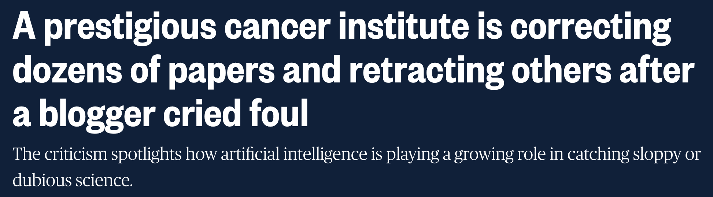
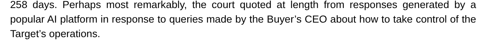

It opens every drawer
Two old records that someone outside read, and that came back to bite.
Dana-Farber · six retractions requested, 31 papers being corrected, no misconduct found

Krafton · the court quoted the chief executive's AI chatbot answers

NBC News, January 2024 · Harvard Law School Forum on Corporate Governance, on Fortis Advisors v. Krafton